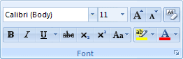
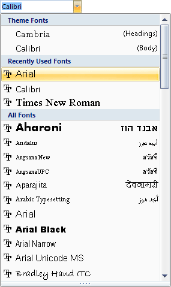
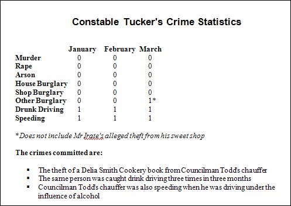
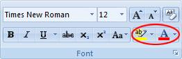
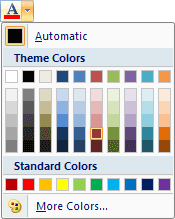
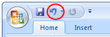

Free
computer Tutorials
|
Free
computer Tutorials
|
|
 home home |
|
|||||
Microsoft Word 2007 to 2010
Working with FontsA font is a style and design of text. Examine this letter: Now examine this one: As you can see, the two styles are completely different. Notice how straight and blocky the second one is compared to the first. The first one has little pointy bits on its edges. The pointy bit is called a serif. Fonts are basically split into two types - those that have the pointy edges, and those that don't. The pointy fonts are called serif fonts, and the ones without pointy bits are called sans serif fonts. The first of the letter Es is the very popular serif font "Times New Roman". The second letter e is the most popular sans serif font "Arial".
With Microsoft Word 2007 and later, the font you get if you don't make any changes is called Calibri. Calibri is a sans serif font that looks very similar to Arial. It's common practice to use a sans serif font for headings and a serif font for text. We'll follow that tradition. We'll use Arial for the heading of our report, and use Times New Roman for the body text. To change the font heading to Arial, do the following:
 The font above is set to Calibri, and the size is 11. The big A and the little A just to the right of font size are quick ways to either increase or decrease the size of selected text. Click the down-pointing arrow to the right of the font box to reveal a list of the all the font on your system:  Hold your left mouse button down on the vertical scroll bar to the right of the fonts. Move your mouse down to scroll through all of your fonts (you may not have the same ones we have). If you hover your mouse over a font name your text will change, giving you a preview of what it looks like. Click a font once to select it. We want Arial so select it from the list. Use the font size box just to the right of the font name box and change the size to 16. Remove any underline you added for the title. Centre your heading, as well. Your report will then look like this: 
Font coloursYou can set a different colour for your font. To do that, highlight the text you want to change. Then locate the red underlined letter A on the Font panel of the Home ribbon:  Click the arrow next to the letter A to see some colours appear:  Select a colour from the list by clicking one with your left mouse button, or click the "More Colours" link at the bottom. To the left of the font colours option there is a yellow underline with the letters "ab" on top. What this does is to change the background colour behind your text. Have a play around with this to see what it looks like. When you finished experimenting, click the Undo arrow to get back to how it was before. The Undo arrow is at the top of Microsoft Word, just to the right of the Save icon: Word 2007 
Word 2010 You can also use the keyboard shortcut combination of CTRL and Z to undo things. Just hold down the CTRL key. Keep it held down and press the Z key.
In the next lesson, we'll take a look at page margins. |
||||||
|